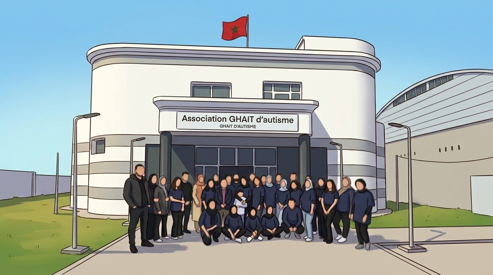

Engagement international · Maroc
Autisme et précarité
Au Maroc, certaines familles vivent à la fois l'autisme, des soucis de santé et une grande précarité. Nous agissons à leurs côtés, avec un partenaire de terrain.

Pourquoi cet engagement
Avec Mohamed, nous savons ce que représentent l'autisme et des soucis de santé qui s'ajoutent les uns aux autres. Certaines familles vivent tout cela dans une grande précarité, sans les moyens de faire face. C'est vers elles que nous avons choisi d'agir.
Ce que nous faisons
En collaboration étroite avec la direction et la présidence de l'association GHAIT d'Autisme, nous organisons des aides ponctuelles et durables pour des familles qui cumulent autisme, soucis de santé et grande précarité.
Pour que les besoins essentiels du quotidien soient couverts.
Pour les soins et traitements que les familles ne peuvent pas assumer seules.
Vêtements et autres besoins matériels de l'enfant et de la famille.
Chaque situation est vérifiée scrupuleusement sur place, avec l'association GHAIT d'Autisme, avant toute aide. Nous nous assurons de la réalité des besoins, pour que chaque aide arrive là où elle est vraiment nécessaire.
Cette rubrique s'enrichira au fil de nos actions et de nos collaborations.